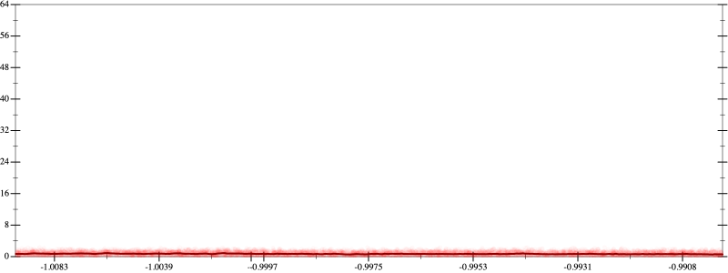
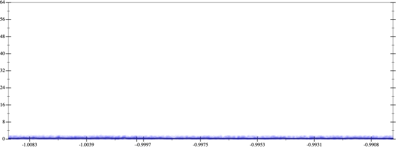
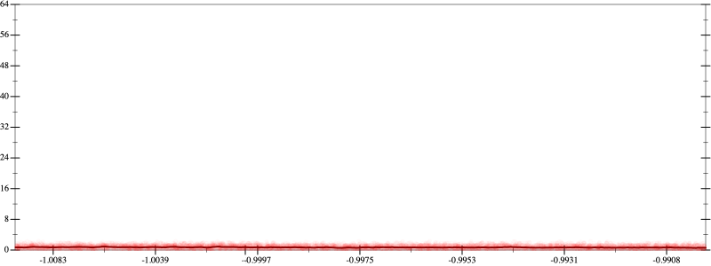
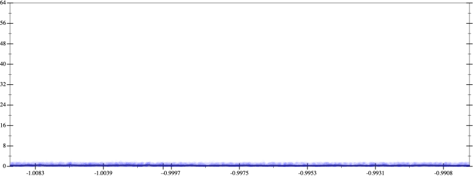

Initial program 0.7
\[\left(\left(\left(\left(\left(\left(\left(\left(\left(\left(\left(\left(1.0 + -19.0 \cdot x\right) + 85.5 \cdot \left(x \cdot x\right)\right) + -161.5 \cdot \left(\left(x \cdot x\right) \cdot x\right)\right) + 161.5 \cdot \left(\left(\left(x \cdot x\right) \cdot x\right) \cdot x\right)\right) + -96.9 \cdot \left(\left(\left(\left(x \cdot x\right) \cdot x\right) \cdot x\right) \cdot x\right)\right) + 37.683333 \cdot \left(\left(\left(\left(\left(x \cdot x\right) \cdot x\right) \cdot x\right) \cdot x\right) \cdot x\right)\right) + -9.997619 \cdot \left(\left(\left(\left(\left(\left(x \cdot x\right) \cdot x\right) \cdot x\right) \cdot x\right) \cdot x\right) \cdot x\right)\right) + 1.874554 \cdot \left(\left(\left(\left(\left(\left(\left(x \cdot x\right) \cdot x\right) \cdot x\right) \cdot x\right) \cdot x\right) \cdot x\right) \cdot x\right)\right) + -0.254569 \cdot \left(\left(\left(\left(\left(\left(\left(\left(x \cdot x\right) \cdot x\right) \cdot x\right) \cdot x\right) \cdot x\right) \cdot x\right) \cdot x\right) \cdot x\right)\right) + 0.025457 \cdot \left(\left(\left(\left(\left(\left(\left(\left(\left(x \cdot x\right) \cdot x\right) \cdot x\right) \cdot x\right) \cdot x\right) \cdot x\right) \cdot x\right) \cdot x\right) \cdot x\right)\right) + -0.001893 \cdot \left(\left(\left(\left(\left(\left(\left(\left(\left(\left(x \cdot x\right) \cdot x\right) \cdot x\right) \cdot x\right) \cdot x\right) \cdot x\right) \cdot x\right) \cdot x\right) \cdot x\right) \cdot x\right)\right) + 0.000105 \cdot \left(\left(\left(\left(\left(\left(\left(\left(\left(\left(\left(x \cdot x\right) \cdot x\right) \cdot x\right) \cdot x\right) \cdot x\right) \cdot x\right) \cdot x\right) \cdot x\right) \cdot x\right) \cdot x\right) \cdot x\right)\right) + -4 \cdot 10^{-06} \cdot \left(\left(\left(\left(\left(\left(\left(\left(\left(\left(\left(\left(x \cdot x\right) \cdot x\right) \cdot x\right) \cdot x\right) \cdot x\right) \cdot x\right) \cdot x\right) \cdot x\right) \cdot x\right) \cdot x\right) \cdot x\right) \cdot x\right)\]
Applied simplify0.5
\[\leadsto \color{blue}{\left(\left(\left(\left(-9.997619 \cdot x\right) \cdot \left({x}^{3} \cdot {x}^{3}\right) + \left(\left(x \cdot x\right) \cdot \left(x \cdot x\right)\right) \cdot \left(\left(x \cdot x\right) \cdot 37.683333\right)\right) + \left(\left(\left(\left(-161.5 \cdot x\right) \cdot \left(x \cdot x\right) + 1.0\right) + x \cdot \left(-19.0 + x \cdot 85.5\right)\right) + \left({x}^{3} \cdot \left(x \cdot 161.5\right) + \left(-96.9 \cdot x\right) \cdot \left(\left(x \cdot x\right) \cdot \left(x \cdot x\right)\right)\right)\right)\right) + \left(\left({x}^{3} \cdot {x}^{3}\right) \cdot \left(\left(x \cdot x\right) \cdot 1.874554\right) + \left(\left(\left(\left(x \cdot x\right) \cdot \left(x \cdot x\right)\right) \cdot \left(\left(x \cdot x\right) \cdot \left(x \cdot x\right)\right)\right) \cdot \left(x \cdot -0.254569\right) + \left(\left(\left(x \cdot x\right) \cdot \left(x \cdot x\right)\right) \cdot \left(\left(x \cdot x\right) \cdot \left(x \cdot x\right)\right)\right) \cdot \left(\left(x \cdot x\right) \cdot 0.025457\right)\right)\right)\right) + \left(\left(\left(\left({x}^{3} \cdot {x}^{3}\right) \cdot {x}^{3}\right) \cdot \left(\left(x \cdot x\right) \cdot -0.001893\right) + \left(\left({x}^{3} \cdot {x}^{3}\right) \cdot \left(\left(x \cdot x\right) \cdot \left(x \cdot x\right)\right)\right) \cdot \left(\left(x \cdot x\right) \cdot 0.000105\right)\right) + \left(\left(\left(\left(x \cdot x\right) \cdot \left(x \cdot x\right)\right) \cdot \left(\left(x \cdot x\right) \cdot \left(x \cdot x\right)\right)\right) \cdot \left(\left(x \cdot x\right) \cdot \left(x \cdot x\right)\right)\right) \cdot \left(x \cdot -4 \cdot 10^{-06}\right)\right)}\]
Taylor expanded around inf 0.5
\[\leadsto \left(\left(\left(\left(-9.997619 \cdot x\right) \cdot \left({x}^{3} \cdot {x}^{3}\right) + \left(\left(x \cdot x\right) \cdot \left(x \cdot x\right)\right) \cdot \left(\left(x \cdot x\right) \cdot 37.683333\right)\right) + \left(\left(\left(\left(-161.5 \cdot x\right) \cdot \left(x \cdot x\right) + 1.0\right) + x \cdot \left(-19.0 + x \cdot 85.5\right)\right) + \left({x}^{3} \cdot \left(x \cdot 161.5\right) + \left(-96.9 \cdot x\right) \cdot \left(\left(x \cdot x\right) \cdot \left(x \cdot x\right)\right)\right)\right)\right) + \left(\left({x}^{3} \cdot {x}^{3}\right) \cdot \left(\left(x \cdot x\right) \cdot 1.874554\right) + \left(\color{blue}{{x}^{8}} \cdot \left(x \cdot -0.254569\right) + \left(\left(\left(x \cdot x\right) \cdot \left(x \cdot x\right)\right) \cdot \left(\left(x \cdot x\right) \cdot \left(x \cdot x\right)\right)\right) \cdot \left(\left(x \cdot x\right) \cdot 0.025457\right)\right)\right)\right) + \left(\left(\left(\left({x}^{3} \cdot {x}^{3}\right) \cdot {x}^{3}\right) \cdot \left(\left(x \cdot x\right) \cdot -0.001893\right) + \left(\left({x}^{3} \cdot {x}^{3}\right) \cdot \left(\left(x \cdot x\right) \cdot \left(x \cdot x\right)\right)\right) \cdot \left(\left(x \cdot x\right) \cdot 0.000105\right)\right) + \left(\left(\left(\left(x \cdot x\right) \cdot \left(x \cdot x\right)\right) \cdot \left(\left(x \cdot x\right) \cdot \left(x \cdot x\right)\right)\right) \cdot \left(\left(x \cdot x\right) \cdot \left(x \cdot x\right)\right)\right) \cdot \left(x \cdot -4 \cdot 10^{-06}\right)\right)\]
Applied simplify0.5
\[\leadsto \color{blue}{\left(\left(\left(\left(\left(x \cdot x\right) \cdot \left(x \cdot x\right)\right) \cdot \left(\left(x \cdot x\right) \cdot \left(x \cdot x\right)\right)\right) \cdot \left(\left(x \cdot x\right) \cdot \left(\left(x \cdot x\right) \cdot \left(x \cdot -4 \cdot 10^{-06}\right)\right)\right) + {\left(x \cdot x\right)}^{3} \cdot \left(\left(\left(x \cdot x\right) \cdot \left(x \cdot x\right)\right) \cdot \left(-0.001893 \cdot x\right) + \left(x \cdot \left(0.000105 \cdot x\right)\right) \cdot \left(\left(x \cdot x\right) \cdot \left(x \cdot x\right)\right)\right)\right) + \left(\left(\left({\left(x \cdot x\right)}^{3} \cdot \left(-9.997619 \cdot x\right) + \left(\left(37.683333 \cdot x\right) \cdot x\right) \cdot \left(\left(x \cdot x\right) \cdot \left(x \cdot x\right)\right)\right) + \left(\left(x \cdot 161.5\right) \cdot {x}^{3} + \left(\left(x \cdot x\right) \cdot \left(-96.9 \cdot x\right)\right) \cdot \left(x \cdot x\right)\right)\right) + \left(\left(x \cdot x\right) \cdot \left(-161.5 \cdot x\right) + \left(\left(1.0 + -19.0 \cdot x\right) + \left(x \cdot x\right) \cdot 85.5\right)\right)\right)\right) + \left(\left(\left(\left(0.025457 \cdot x\right) \cdot x\right) \cdot \left(\left(x \cdot x\right) \cdot \left(x \cdot x\right)\right)\right) \cdot \left(\left(x \cdot x\right) \cdot \left(x \cdot x\right)\right) + \left({\left(x \cdot x\right)}^{3} \cdot \left(1.874554 \cdot \left(x \cdot x\right)\right) + \left(-0.254569 \cdot x\right) \cdot {x}^{8}\right)\right)}\]
Taylor expanded around inf 0.5
\[\leadsto \left(\left(\left(\left(\left(x \cdot x\right) \cdot \left(x \cdot x\right)\right) \cdot \left(\left(x \cdot x\right) \cdot \left(x \cdot x\right)\right)\right) \cdot \left(\left(x \cdot x\right) \cdot \left(\left(x \cdot x\right) \cdot \left(x \cdot -4 \cdot 10^{-06}\right)\right)\right) + {\left(x \cdot x\right)}^{3} \cdot \left(\left(\left(x \cdot x\right) \cdot \left(x \cdot x\right)\right) \cdot \left(-0.001893 \cdot x\right) + \left(x \cdot \left(0.000105 \cdot x\right)\right) \cdot \left(\left(x \cdot x\right) \cdot \left(x \cdot x\right)\right)\right)\right) + \left(\left(\left({\left(x \cdot x\right)}^{3} \cdot \left(-9.997619 \cdot x\right) + \left(\left(37.683333 \cdot x\right) \cdot x\right) \cdot \left(\left(x \cdot x\right) \cdot \left(x \cdot x\right)\right)\right) + \left(\left(x \cdot 161.5\right) \cdot {x}^{3} + \left(\left(x \cdot x\right) \cdot \left(-96.9 \cdot x\right)\right) \cdot \left(x \cdot x\right)\right)\right) + \left(\left(x \cdot x\right) \cdot \left(-161.5 \cdot x\right) + \left(\left(1.0 + -19.0 \cdot x\right) + \left(x \cdot x\right) \cdot 85.5\right)\right)\right)\right) + \left(\left(\left(\left(0.025457 \cdot x\right) \cdot x\right) \cdot \left(\left(x \cdot x\right) \cdot \left(x \cdot x\right)\right)\right) \cdot \left(\left(x \cdot x\right) \cdot \left(x \cdot x\right)\right) + \left(\color{blue}{{\left(\frac{1}{x}\right)}^{-6}} \cdot \left(1.874554 \cdot \left(x \cdot x\right)\right) + \left(-0.254569 \cdot x\right) \cdot {x}^{8}\right)\right)\]
Applied simplify0.4
\[\leadsto \color{blue}{\left(\left(\left(\left(\left(0.000105 \cdot x\right) \cdot {x}^{3}\right) \cdot {\left(x \cdot x\right)}^{\left(3 + 1\right)} + {\left(x \cdot x\right)}^{\left(3 + 1\right)} \cdot \left(\left(x \cdot -0.001893\right) \cdot \left(x \cdot x\right)\right)\right) + {\left(x \cdot x\right)}^{\left(3 + 1\right)} \cdot \left(\left(\left(x \cdot x\right) \cdot \left(x \cdot x\right)\right) \cdot \left(x \cdot -4 \cdot 10^{-06}\right)\right)\right) + \left(\left(\left(x \cdot \left(37.683333 \cdot x\right)\right) \cdot \left(\left(x \cdot x\right) \cdot \left(x \cdot x\right)\right) + \left(\left(x \cdot x\right) \cdot \left(x \cdot x\right)\right) \cdot \left(\left(x \cdot x\right) \cdot \left(x \cdot -9.997619\right)\right)\right) + \left(\left(161.5 \cdot x\right) \cdot {x}^{3} + \left(x \cdot -96.9\right) \cdot \left(\left(x \cdot x\right) \cdot \left(x \cdot x\right)\right)\right)\right)\right) + \left(\left(\left(\left(x \cdot -161.5\right) \cdot \left(x \cdot x\right) + 85.5 \cdot \left(x \cdot x\right)\right) + \left(1.0 + x \cdot -19.0\right)\right) + \left(\left(\left(0.025457 \cdot x\right) \cdot {x}^{3}\right) \cdot \left({x}^{3} \cdot {x}^{3}\right) + \left(\left(\left(x \cdot x\right) \cdot 1.874554\right) \cdot {\left(\frac{1}{x}\right)}^{-6} + {x}^{8} \cdot \left(x \cdot -0.254569\right)\right)\right)\right)}\]
 
